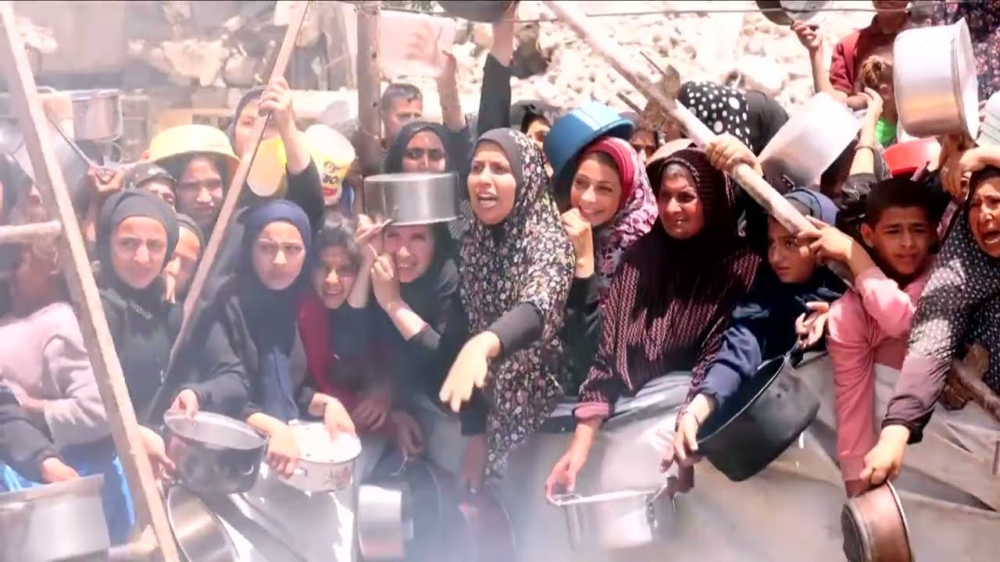

扫码查看视频
【在压力之下，以色列允许部分面包和婴儿食品运抵加沙民众手中 | 路透社】
Summary: Israel permitted limited essential supplies into Gaza amid blockade, but aid remains insufficient as famine warnings grow.
摘要： 以色列在封锁期间允许少量必需品进入加沙，但援助仍不足，饥荒警告加剧。

⏱️ Estimated Reading Time: 2 min
Israel allowed some trucks carrying flour, baby food, and other life essentials into Gaza on Thursday, but nowhere near enough to meet the desperate need caused by an 11-week blockade.
以色列周四允许一些载有面粉、婴儿食品和其他生活必需品的卡车进入加沙，但远不足以满足因11周封锁造成的迫切需求。
That's according to Palestinian Aid Networks, the United Nations, and aid agencies as Israel comes under increasing pressure and experts warn of famine.
这是巴勒斯坦援助网络、联合国和援助机构的说法，以色列面临越来越大的压力，专家警告饥荒风险。
More than 29 Palestinian health minister Majid Abu Ramadan said more than 29 children, infants and elderly had died because of starvation-related issues.
巴勒斯坦卫生部长马吉德·阿布·拉马丹表示，已有超过29名儿童、婴儿和老人因饥饿相关问题死亡。
This was UN spokesperson Stefan Dujarik late on Wednesday.
这是联合国发言人斯特凡·杜加里克周三晚间的表态。
It is important to underscore that the limited supplies finally being allowed to enter Kerem Shalom are nowhere near enough to meet the needs in Gaza, which are vast, which are tremendous.
必须强调，最终获准进入凯雷姆沙洛姆的有限物资远不足以满足加沙的巨大需求。
Much much more aid needs to get in.
还需要更多援助进入。
Israel said it allowed 100 trucks into the enclave on Wednesday, 2 days after announcing its first relaxation of the aid blockade it imposed in March.
以色列表示，周三允许100辆卡车进入该地区，这是在宣布自3月实施援助封锁以来首次放松的两天后。
This was the world food program's onto Rena this week.
这是世界粮食计划署本周的声明。
There are 2.1 million people that are in what we call food crisis out of which a quarter of the Gazan population is actually at the risk of famine.
有210万人处于我们所说的粮食危机中，其中四分之一的加沙人口面临饥荒风险。
This bakery in Dul Bala, backed by the UN's World Food Program, resumed work on Thursday after receiving the flour.
在联合国世界粮食计划署支持下，杜尔巴拉的一家面包店在收到面粉后于周四恢复工作。
But as the first aid arrived, Israeli military strikes on Gaza killed at least 35 Palestinians across the enclave on Thursday, local health authorities said.
但当地卫生部门表示，就在首批援助抵达之际，以色列周四对加沙的军事打击造成该地区至少35名巴勒斯坦人死亡。
Israeli Prime Minister Benjamin Netanyahu said on Wednesday the war in Gaza would continue until Hamas was disarmed and the Palestinian enclave was under Israeli military control.
以色列总理本杰明·内塔尼亚胡周三表示，加沙战争将持续到哈马斯解除武装且该巴勒斯坦地区处于以色列军事控制之下。
Hamas Khalil.
哈马斯·哈利勒。